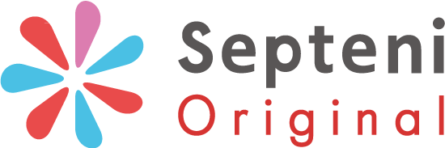

求人・広告
Job Offer & Advertising
株式会社セプテーニ・オリジナル

【企業概要】
セプテーニ・オリジナルはセプテーニ・グループにおける様々な開発を担当してる会社です。
高い成長を続けるソーシャルメディア（Facebook、Twitterなど）のアドテクノロジーに関するシステムや、
コンシューマ向けオリジナル新作マンガの配信サービス「GANMA！(ガンマ)」等を開発しており、ほぼ全てのプロダクトでScalaを採用しています。
Scala Matsuri 2016 , Scala Matsuri 2017 将軍スポンサーです。
【文化】
コードレビューやスクラムの適用などは当然とし、ドメイン駆動設計を取り入れる等、綺麗なコードを素早くを作ることに注力しています。2016年10月現在、以下の方針の下に開発を行っています。
我々は”高速高品質”を目指す
我々は保守性のあるコードを高速に生産する
気軽に品質を維持するため、Scalaを利用する
プロダクトオーナーがハンドルを握るため、スクラムを採用する
チーム全員で要求の芯を捉え続けるため、DDDを採用する
リファクタリングをし続けるため、ユニットテストを書く
ちゃんとやる＝遅いという思い込みを止める
意識を保ち続けるため、レビューを行う
※詳細はセプテーニ・オリジナル - 技術指針をご参照ください。
【活動】
Scalaに関するイベントを不定期開催しています。グループメンバーへのご参加お待ちしております！
●新宿 Geek Lounge
●“Septeni×Scala”勉強会
●Scala将軍達の後の祭り
●Scala/Scrum/DDD 困ったこと50連発ガトリングトーク！！
【求人】
セプテーニ・オリジナルでは一緒に働ける仲間を積極的に募集しています。 Scala未経験でも構いません、ぜひご応募ください！
株式会社Tech to Value
「Scalaスペシャリスト、育てます」

(株)Tech to Value では Scala Onlineコードレビューをサービスとして行っています。
GitHubやそれに類するサービスにてPull Requestベースによるコードレビュー、ならびにSlackやChatworkといったチャットサービスによるFAQを通じ、チームに実践的なScalaの使い方を広げていきます。
Scalaの導入を検討しているが、チームに詳しい人間が居ないため二の足を踏んでいる企業がありましたら、ぜひ導入をご検討ください。
製品情報ページ
株式会社エフ・コード
《Scale with Scala!!》エンジニアを絶賛募集しています

株式会社エフ・コードでは、自社で提供するマーケティングプラットフォームの設計・開発・運用を担うエンジニアを積極採用しています。製品の主要コンポーネントはScalaで開発します。企画から開発運用、インフラからフロントまで幅広く関わっていただけます。製品も組織もまだまだこれからですが、一緒に作って世界を狙いましょう。
私たちが取り組む分野はエンジニアの問題解決能力や技術が競争優位につながる世界です。よりコンパクトに、より高速に、よりシンプルにすることで原価は下がり、製品は魅力的になります。品質が向上し、改善速度が上がれば世界の変化の速度に負けず走り続けることができると考えています。
だから、私たちは合理的な選択としてエンジニアリングを大切にします。各自がもっともパフォーマンスが上がる開発環境を用意します。新しい取り組みを奨励し、失敗に対する安全性を確保します。職掌にとらわれずに企画から事業推進まで手を上げた人間が主体となって進められる自由さを守ります。暗黙知を増やしコミュニケーション効率を高めるために、雑談を奨励します。
GitHubとSlackを用いたスタンダードな開発スタイルを採用し、インフラはAWSに置いて世界各国（すでにアジアを中心に複数国に展開しています）からのアクセスを処理しています。どんどん増えるデータに対抗して、RedShiftやSpark/EMR を組み合わせた分散処理システムを構築しています。スケールに伴う変化を楽しめる方をエフ・コードでは募集しています。興味を持たれた方、是非ご連絡ください。
※ 勤務地は東京となります。遠方からの転居が発生する場合、一時支度金などの相談もうかがいますので、まずはお気軽にどうぞ!
採用情報ページ
ChatWork株式会社
Scalaエンジニア絶賛募集中！
当社の提供しているクラウド型ビジネスチャットツール「チャットワーク」の開発。
画面遷移のないフルAjaxの大規模JavaScriptアプリケーション
サーバープッシュを使ったリアルタイム通信処理
膨大なリクエスト/データを処理するクラウドサーバー運用
多言語/グローバル対応など、次世代のWebアプリケーションというべき実装となっており最新のIT技術・ノウハウを駆使して開発をおこなっていただきます。
エンジニアとして開発だけを担当するのではなく、チャットワークの機能企画や仕様設計なども含め、プロダクト全体を通しての視点で、いかにサービス価値を高めていけるかを追求していける方をお待ちしています。
採用情報ページエムオーテックス株式会社
あなた：「次のプロジェクトはScalaで挑戦してみたいのですが…」
上司 ：「そんな訳のわからない言語はダメです！」
というやり取りを経験したことのあるそこのあなた！
私たちと一緒に、ScalaでAkkaでDDDなプロダクトを一緒に作りませんか？
私たちは、日本でトップシェアを得ているプロダクトを携え、これから世界に打って出ます。
開発効率、品質アップのために選択した開発環境はScala、そしてAkka。
ユーザーの本当の課題を解決し、プロダクトが進化し続けるためのの手法として選択したのはDDD。
あなたの実力を存分に活かす為の環境を用意しています。
是非、世界に打って出る製品を一緒に作りましょう！ご応募お待ちしております！

株式会社リンコード
今日も稼働しているシステムをScalaで
当社は、通信キャリア会社様や通信事業会社様で広く採用されている
音声認識、機械翻訳のシステム開発をメインに行っています。
これらの開発では、多くの端末から送信されるデータを
非同期並列に、かつ高速で処理することが求められます。
このようなシステムをScala + Akkaをベースにゼロから設計開発しています。
当社では、"今日も稼働しているシステム"開発に本気で取り組んでみたい
エンジニアの採用を積極的に行っています。
また、培った知識とスキルを元に自社プロダクト開発も開始しており、
Scalaで"明日稼働するシステム"の開発に携わりたいエンジニアも募集しています。
当社に少しでも興味を持たれた方は、当社採用情報ページをご参照ください。
株式会社はてな
はてなは「『知る』『つながる』『表現する』で新しい体験を提供し、人の生活を豊かにする」をミッションに、「はてなブックマーク」「はてなブログ」などのソーシャルサービスを展開してきました。最近はこれまでのサービス開発・運用知見を活かし、サーバー監視サービス「Mackerel」などビジネス向けの製品や、受託サービスの開発・運用も行っています。
Scala は Mackerel やリニューアル中のはてなブックマークほか、サービスの一部で採用されています（はてなにおけるマイクロサービスとScala、はてなブックマーク in Scala、Mackerel における Scala/Play）。
技術で人の生活を豊かにすることに情熱を持てる方は、ぜひエンジニア採用にご応募ください。勤務地は京都と東京の両方を選択できます。詳しくは採用ページや開発者ブログをご覧ください。
株式会社ヌーラボ
株式会社ヌーラボは「チームで働くすべての人に」をコンセプトに、仕事を楽しく、コラボレーションを促進するサービスを開発しています。プロジェクト管理の「Backlog」、図の作成と共有の「Cacoo」、チームディスカッションの「Typetalk」の開発、提供をおこなっています。
BacklogとTypetalkではScalaを採用しています。会社としてScala福岡という勉強会の支援や、既に開催50回目を超えるScalaや関数型プログラミングに関する勉強を実施しており、今後もさらにScalaに注力します。また、実際にサービスで利用するために開発したScalaのライブラリをGitHubで OSS として公開も行っています。
本社は福岡ですが、国内では京都・東京、海外はニューヨークにも開発拠点があります。すべての拠点で開発者を募集していますので、Scalaを使った開発に興味がある方やヌーラボのサービスに興味がある方、「仕事の中に楽しさを」のコンセプトに共感する方、ぜひご応募ください。詳しくは採用情報やヌーラボブログの技術カテゴリーを参照してください。

日本電気株式会社
● Scala & Sparkでデータサイエンスに革新を！
熟練のデータサイエンティストが数ヶ月かけて行ってきた分析を、誰もがたったの一日で実現する。そんな不可能を可能にする次世代AI技術「予測分析自動化」技術の製品・リサーチエンジニアを募集しています。
● Scala Webバックエンド・製品エンジニア
Playフレームワークを中心とするWebバックエンド製品開発を担当。エンタープライズシステムとしての安定動作を実現する屋台骨を支えます。
● Scala & Sparkコア・製品エンジニア
Apache SparkとScala実装のコアエンジン製品開発を担当。コアアルゴリズムをソフトウェアとして世界へ届けます。
● Scala & Sparkコア・リサーチエンジニア
Apache SparkとScalaで次世代の主機能プロトタイプ開発を担当。研究員と共に世界を革新するアルゴリズムを研究開発します。
世界最先端技術とソフトウェアへの情熱をもって、我々と共にデータサイエンスに革新をおこしましょう！

さくらインターネット株式会社
さくらインターネット株式会社は、"インターネット" で熱量を持って挑戦するすべての人の 「やりたいこと」を「できる」に変える をモットーに、さまざまなインターネットインフラサービスを提供しています。
最近はさくらでもScalaを少しずつ使い始めています。例えば、さくらインターネットが提供するIoTプラットフォームサービス「sakura.io」では、Golang/Python/Scala/Cの4つの言語を主に使っており、メイン言語のひとつとなっています。
また、当社では現在「さぶりこ（Sakura Business and Life Co-Creation）」という取り組みを通じ、働きやすさにこだわった企業づくりを推進しています。
今年の6月に移転したばかりのグランフロント梅田の新本社オフィスにはオープンエリアを用意し、コミュニティへの会場提供も積極的に行っています。
こんなさくらインターネットで働くことにもしご興味をお持ちいただけましたら、ぜひ採用情報ページをご覧ください。